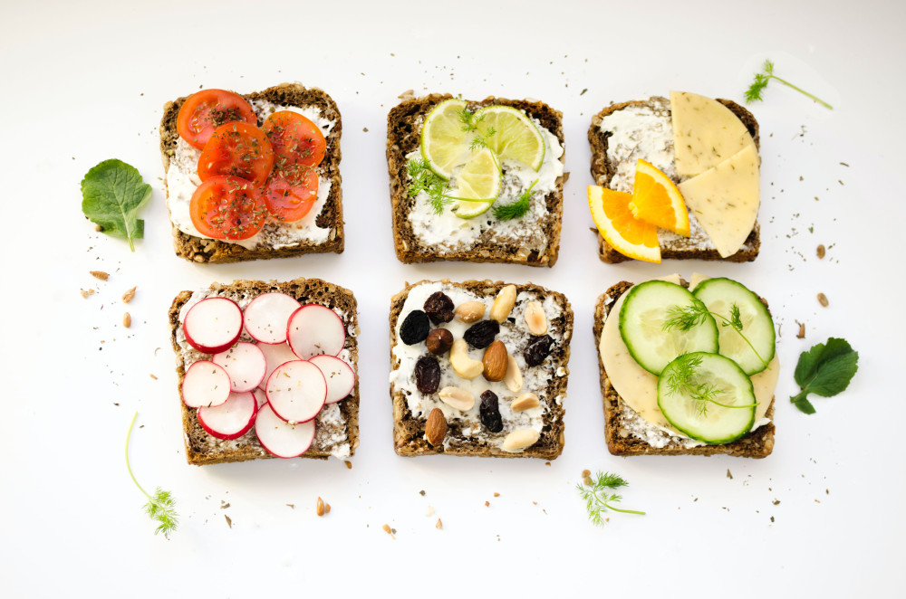

Про підступні перекуси
Часто саме іззвичкою перекусів пов'язують тенденцію до набирання зайвих кілограмів.
Надмірне захоплення перекусами навіть може розглядатися, як деяке порушення харчової поведінки.
Адже далеко не завжди рука тягнеться до холодильники чи шоколадного батончика, тому що ми зголодніли і не знаємо, як би це дожити до обідньої перерви.
Із перекусами справді пов'язаний цілий набір поведінкових перекосів. Ми можемо їх їсти швидко та недостатньо пережовуючи, їсти, коли нам нудно, сумно, тривожно, чи просто, аби не заснути. А ще – замінювати не завжди якісними перекусами основні і, як правило, більш продумані та повноцінні прийоми їжі.
Окремою історією у світлі карантинних буднів стало споживання снеків під час переглядів фільмів чи серіалів. Це типовий приклад, коли жування далеко не завжди пов'язанно із відчуттям голоду.
Та найбільшою печаллю перекусів є все ж не власне їх наявність у раціоні, а те, чим найчастіше ці перекуси представлені. Якщо це тістечка, шоколадні батончики, чіпси, солоні горішки та інші схожі продукти – розраховувати на свої джинси по закінченню карантинних заходів може і не вийти.
Біда цих всіх смаколиків, передусім, у шаленій кількості цукру, солі та насичених жирів.
Однак не все так зле із тими перекусами, якщо підходити до того із почуттям міри та здорового глузду. В українських рекомендаціях по харчуванню говориться, що "ідеальний режим харчування є індивідуальним для кожної людини", і що "інтервал між основними прийомами їжі не мав би перевищувати три з половиною – чотири години, а протягом дня має місце 1-2 перекуси".
Важливо також необхідно навчитися зосереджуватися на процесі споживання їжі. Коли ми поєднуємо якусь зайнятість та їжу, то часто це справді призводить до надмірного її споживання. Таким чином, їжа стає заспокоєнням, способом прокрастинації, чи просто неконтрольованою побічною діяльністю при спогляданні екрану. Тому важливо робити перерву на споживання їжі та приділяти цьому процесу окрему увагу.
Швидкість їди також впливає на кількість спожитої їжі, повноцінність насичення та зниження відчуття голоду. Слід їсти повільно, витрачаючи 20-30 хвилин на основні прийоми їжі та 10-20 хвилин на перекус.
І тепер про головне – "що б такого з'їсти, аби схуднути?"
І, не зважаючи на абсурдність та деяку комічність цього питання, деяке раціональне зерно тут все ж є.
Лайфхак перший – перекушувати варто, коли є відчуття голоду і ми не плутаємо його із якимись іншими відчуттями. Коли зрадливі ноги знову привели до холодильника – варто, перш за все, спитати себе, а чи взагалі я голоден? Як давно я щось їв?
Лайфхак другий – "із очей подалі". Якщо порада "просто не купувати оті всі вкусняшки" також не про вас, то старайтеся принаймні їх сховати далеко в шафи і "про запас", аби вони хоча б не лежали перед очима. Існує невеликий, але шанс, що ви про них просто забудете чи відволічетеся на щось інше.
Лайфхак третій – запросіть себе на перемовини. Спробуйте, наприклад, домовитися із собою не жувати перед монітором комп'ютера (і, до речі, це порятує від зайвих пригод вашу клавіатуру), чи у процесі читання книги.
Якщо із своїми умовними рефлексами важко впоратися і снеки займають стійку позицію у вашій системі винагород, можна поставити перед собою умову, наприклад, виконати якусь вправу чи хоча б випити склянку води перед тим, як з'їсти батончик І дуже ймовірно, що після, скажімо, двадцяти присідань ви так надихнетеся, що передумаєте взагалі їсти якийсь там батончик.
Ну і, звичайно, стараємося замінити весь отой "джанк фуд" на притомну корисну їжу. Фрукти, сухофрукти, несолоні горішки, цільнозернові продукти є джерелом клітковини , вітамінів та мікроелементів. Ключовою у цьому всьому ділі є клітковина, адже вона дає "об'ємне" відчуття ситості. Самі ми при цьому не перетравлюємо клітковину та не отримуємо з того зайвих калорій. Однак її перетравлюють наші манюні-бактерії в кишківнику і будуть щасливі, якщо ви дасте їм такий смаколик. Чудовим варіантом тут також є кисломолочні продукти, в ідеалі – без доданого цукру чи з його мінімальним вмістом. Вони є джерелом повноцінного легкозасвоюваного білку, кальцію, а також тих самих корисних бактерій і ефективно сприяють відчуттю насичення.

Photo by Ola Mishchenko on Unsplash